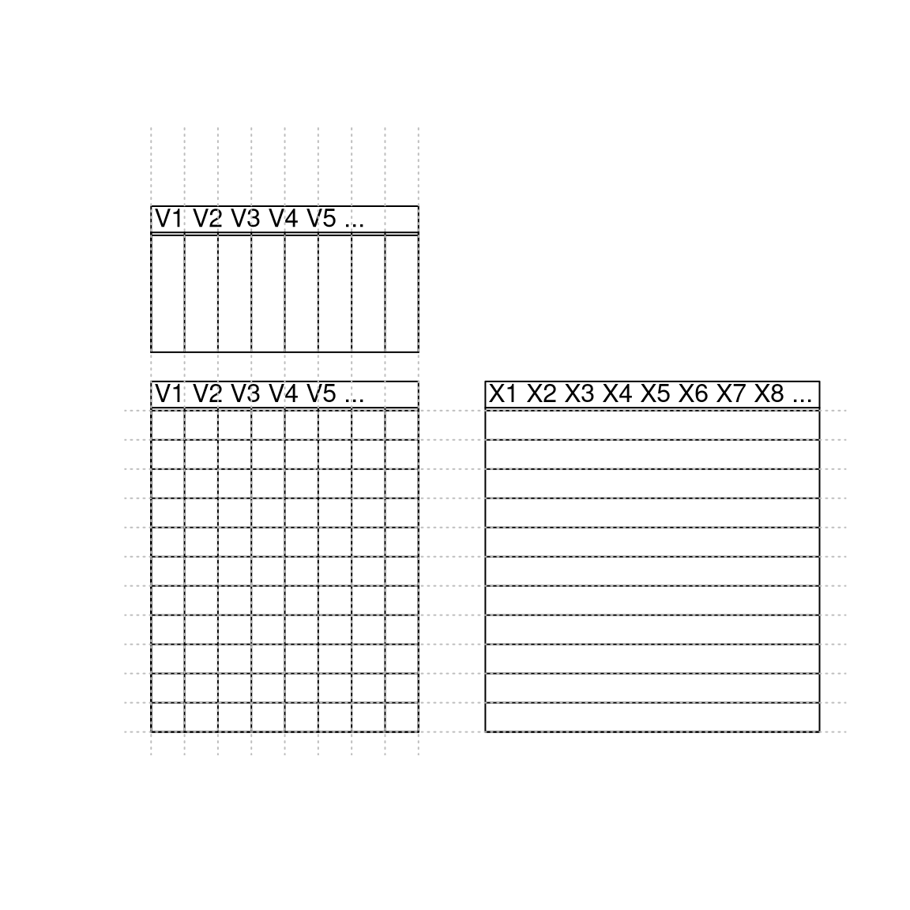

Chapter 7 Joining tables
Learning Objectives
At the end of this section, students should understand
- the need and concept of table joins,
- differences between the different types of joins,
- the importance of keys in joins,
- circumstances leading to the appearance of missing values,
- the implications of using non-unique keys.
In many real life situations, data are spread across multiple tables or spreadsheets. Usually this occurs because different types of information about a subject, e.g. a patient, are collected from different sources. It may be desirable for some analyses to combine data from two or more tables into a single data frame based on a common column, for example, an attribute that uniquely identifies the subject.
The dplyr package, that we have already used extensively, provides a
set of join functions for combining two data frames based on matches
within specified columns.
For further reading, please refer to the chapter about table joins in Grolemund and Wickham (2017Grolemund, Garrett, and Hadley Wickham. 2017. R for Data Science. O’Reilly Media. https://r4ds.had.co.nz/.).
The Data Transformation Cheat Sheet also provides a short overview on table joins.
7.1 Combining tables
We are going to illustrate join using a common example from the bioinformatics world, where annotations about genes are scattered in different tables that have one or more shared columns. The data we are going to use are available in the course package and can be loaded as shown below.
The example data is composed of pairs of tables (we have tibbles here,
but this would equally work with dataframes). The first member of the
pair contains protein UniProt11 UniProt is the protein information database. Its mission is to provide the scientific community with a comprehensive, high-quality and freely accessible resource of protein sequence and functional information. unique
accession number (uniprot variable), the most likely sub-cellular
localisation of these respective proteins (organelle variable) as
well as the proteins identifier (entry).
## # A tibble: 25 × 3
## uniprot organelle entry
## <chr> <chr> <chr>
## 1 P26039 Actin cytoskeleton TLN1_MOUSE
## 2 Q99PL5 Endoplasmic reticulum/Golgi apparatus RRBP1_MOUSE
## 3 Q6PB66 Mitochondrion LPPRC_MOUSE
## 4 P11276 Extracellular matrix FINC_MOUSE
## 5 Q6PR54 Nucleus - Chromatin RIF1_MOUSE
## 6 Q05793 Extracellular matrix PGBM_MOUSE
## 7 P19096 Cytosol FAS_MOUSE
## 8 Q9JKF1 Plasma membrane IQGA1_MOUSE
## 9 Q9QZQ1-2 Plasma membrane AFAD_MOUSE
## 10 Q6NS46 Nucleus - Non-chromatin RRP5_MOUSE
## # ℹ 15 more rowsThe second table contains the name of the gene that codes for the
protein (gene_name variable), a description of the gene
(description variable), the uniprot accession number (this is the
common variable that can be used to join tables) and the species the
protein information comes from (organism variable).
## # A tibble: 25 × 4
## gene_name description uniprot organism
## <chr> <chr> <chr> <chr>
## 1 Iqgap1 Ras GTPase-activating-like protein IQGAP1 Q9JKF1 Mmus
## 2 Hspa5 78 kDa glucose-regulated protein P20029 Mmus
## 3 Pdcd11 Protein RRP5 homolog Q6NS46 Mmus
## 4 Tfrc Transferrin receptor protein 1 Q62351 Mmus
## 5 Hspd1 60 kDa heat shock protein, mitochondrial P63038 Mmus
## 6 Tln1 Talin-1 P26039 Mmus
## 7 Smc1a Structural maintenance of chromosomes protein 1A Q9CU62 Mmus
## 8 Lamc1 Laminin subunit gamma-1 P02468 Mmus
## 9 Hsp90b1 Endoplasmin P08113 Mmus
## 10 Mia3 Melanoma inhibitory activity protein 3 Q8BI84 Mmus
## # ℹ 15 more rowsWe now want to join these two tables into a single one containing all
variables. We are going to use dplyr’s full_join function to do
so, that finds the common variable (in this case uniprot) to match
observations from the first and second table.
## Joining with `by = join_by(uniprot)`## # A tibble: 25 × 6
## uniprot organelle entry gene_name description organism
## <chr> <chr> <chr> <chr> <chr> <chr>
## 1 P26039 Actin cytoskeleton TLN1… Tln1 Talin-1 Mmus
## 2 Q99PL5 Endoplasmic reticulum/Golgi ap… RRBP… Rrbp1 Ribosome-b… Mmus
## 3 Q6PB66 Mitochondrion LPPR… Lrpprc Leucine-ri… Mmus
## 4 P11276 Extracellular matrix FINC… Fn1 Fibronectin Mmus
## 5 Q6PR54 Nucleus - Chromatin RIF1… Rif1 Telomere-a… Mmus
## 6 Q05793 Extracellular matrix PGBM… Hspg2 Basement m… Mmus
## 7 P19096 Cytosol FAS_… Fasn Fatty acid… Mmus
## 8 Q9JKF1 Plasma membrane IQGA… Iqgap1 Ras GTPase… Mmus
## 9 Q9QZQ1-2 Plasma membrane AFAD… Mllt4 Isoform 1 … Mmus
## 10 Q6NS46 Nucleus - Non-chromatin RRP5… Pdcd11 Protein RR… Mmus
## # ℹ 15 more rowsIn the examples above, each observation of the jdf1 and jdf2
tables are uniquely identified by their UniProt accession number. Such
variables are called keys. Keys are used to match observations
across different tables.
In case none of the variable names match, those to be used can be set
manually using the by argument, as shown below with the jdf1 (as
above) and jdf3 tables, where the UniProt accession number is
encoded using a different capitalisation.
## [1] "gene_name" "description" "UniProt" "organism"## # A tibble: 25 × 6
## uniprot organelle entry gene_name description organism
## <chr> <chr> <chr> <chr> <chr> <chr>
## 1 P26039 Actin cytoskeleton TLN1… Tln1 Talin-1 Mmus
## 2 Q99PL5 Endoplasmic reticulum/Golgi ap… RRBP… Rrbp1 Ribosome-b… Mmus
## 3 Q6PB66 Mitochondrion LPPR… Lrpprc Leucine-ri… Mmus
## 4 P11276 Extracellular matrix FINC… Fn1 Fibronectin Mmus
## 5 Q6PR54 Nucleus - Chromatin RIF1… Rif1 Telomere-a… Mmus
## 6 Q05793 Extracellular matrix PGBM… Hspg2 Basement m… Mmus
## 7 P19096 Cytosol FAS_… Fasn Fatty acid… Mmus
## 8 Q9JKF1 Plasma membrane IQGA… Iqgap1 Ras GTPase… Mmus
## 9 Q9QZQ1-2 Plasma membrane AFAD… Mllt4 Isoform 1 … Mmus
## 10 Q6NS46 Nucleus - Non-chromatin RRP5… Pdcd11 Protein RR… Mmus
## # ℹ 15 more rowsAs can be seen above, the variable name of the first table is retained in the joined one.
► Question
Using the full_join function demonstrated above, join tables jdf4
and jdf5. What has happened for observations P26039 and P02468?
► Solution
7.2 Different types of joins
Above, we have used the full_join function, that fully joins two
tables and keeps all observations, adding missing values if
necessary. Sometimes, we want to be selective, and keep observations
that are present in only one or both tables.
- An inner join keeps observations that are present in both tables.
Figure 7.1: An inner join matches pairs of observation matching in both tables, this dropping those that are unique to one table. Figure taken from R for Data Science.

- A left join keeps observations that are present in the left (first) table, dropping those that are only present in the other.
- A right join keeps observations that are present in the right (second) table, dropping those that are only present in the other.
- A full join keeps all observations.
Figure 7.2: Outer joins match observations that appear in at least on table, filling up missing values with NA values. Figure taken from R for Data Science.

► Question
Join tables jdf4 and jdf5, keeping only observations in jdf4.
► Solution
► Question
Join tables jdf4 and jdf5, keeping only observations in jdf5.
► Solution
► Question
Join tables jdf4 and jdf5, keeping observations observed in both tables.
► Solution
7.3 Multiple matches
Sometimes, keys aren’t unique. In the jdf6 table below, we see that
the accession number Q99PL5 is repeated twice. According to this
table, the ribosomial protein binding protein 1 localises in the
endoplasmic
reticulum (often
abbreviated ER) and in the Golgi
apparatus (often
abbreviated GA).
## # A tibble: 5 × 4
## uniprot organelle entry isoform
## <chr> <chr> <chr> <dbl>
## 1 P26039 Actin cytoskeleton TLN1_MOUSE 1
## 2 Q99PL5 Endoplasmic reticulum RRBP1_MOUSE 1
## 3 Q99PL5 Golgi apparatus RRBP1_MOUSE 2
## 4 Q6PB66 Mitochondrion LPPRC_MOUSE 1
## 5 P11276 Extracellular matrix FINC_MOUSE 1If we now want to join jdf6 and jdf2, the variables of the latter
will be duplicated.
## Joining with `by = join_by(uniprot)`## # A tibble: 5 × 7
## uniprot organelle entry isoform gene_name description organism
## <chr> <chr> <chr> <dbl> <chr> <chr> <chr>
## 1 P26039 Actin cytoskeleton TLN1_MOU… 1 Tln1 Talin-1 Mmus
## 2 Q99PL5 Endoplasmic reticulum RRBP1_MO… 1 Rrbp1 Ribosome-b… Mmus
## 3 Q99PL5 Golgi apparatus RRBP1_MO… 2 Rrbp1 Ribosome-b… Mmus
## 4 Q6PB66 Mitochondrion LPPRC_MO… 1 Lrpprc Leucine-ri… Mmus
## 5 P11276 Extracellular matrix FINC_MOU… 1 Fn1 Fibronectin MmusIn the case above, repeating is useful, as it completes jdf6 with
correct information from jdf2. One needs however to be careful when
duplicated keys exist in both tables. Below, we create an inner join
between jdf6 and jdf7, both having duplicated Q99PL5 entries.
## Joining with `by = join_by(uniprot)`## Warning in inner_join(jdf6, jdf7): Detected an unexpected many-to-many relationship between `x` and `y`.
## ℹ Row 2 of `x` matches multiple rows in `y`.
## ℹ Row 1 of `y` matches multiple rows in `x`.
## ℹ If a many-to-many relationship is expected, set `relationship = "many-to-many"` to silence this warning.## # A tibble: 4 × 9
## uniprot organelle entry isoform gene_name description organism isoform_num
## <chr> <chr> <chr> <dbl> <chr> <chr> <chr> <dbl>
## 1 Q99PL5 Endoplasmic … RRBP… 1 Rrbp1 Ribosome-b… Mmus 1
## 2 Q99PL5 Endoplasmic … RRBP… 1 Rrbp1 Ribosome-b… Mmus 2
## 3 Q99PL5 Golgi appara… RRBP… 2 Rrbp1 Ribosome-b… Mmus 1
## 4 Q99PL5 Golgi appara… RRBP… 2 Rrbp1 Ribosome-b… Mmus 2
## # ℹ 1 more variable: measure <dbl>► Question
Interpret the result of the inner join above, where both tables have duplicated keys.
► Solution

7.4 Matching across multiple keys
So far, we have matched tables using a single key (possibly with different names in the two tables). Sometimes, it is necessary to match tables using multiple keys. A typical example is when multiple variables are needed to discriminate different rows in a tables.
Following up from the last example, we see that the duplicated UniProt
accession numbers in the jdf6 and jdf7 tables refer to different
isoforms of the same
RRBP1 gene. To uniquely identify isoforms, we need to consider two
keys, namely the UniProt accession number (named uniprot in both
tables) as well as the isoform number, called isoform and
isoform_num respectively.
Because the isoform status was encoded using different variable names
(which is, of course a source of confusion), jdf6 and jdf7 are
only automatically joined based on the shared uniprot key. Here, we
need to join using both keys and need to explicitly name the variables
used for the join.
## # A tibble: 2 × 8
## uniprot organelle entry isoform gene_name description organism measure
## <chr> <chr> <chr> <dbl> <chr> <chr> <chr> <dbl>
## 1 Q99PL5 Endoplasmic reti… RRBP… 1 Rrbp1 Ribosome-b… Mmus 102
## 2 Q99PL5 Golgi apparatus RRBP… 2 Rrbp1 Ribosome-b… Mmus 3We now see that isoform 1 localised to the ER and has a measured value of 102, while isoform 2, that localised to the GA, has a measured value of 3.
► Question
Can you think of another way to merge tables jdf6 and jdf7 using
the two keys?
► Solution
7.5 Merge in base R
Above, we have used several join functions from the dplyr package as
they are convenient and easy to remember. The equivalent function in
the base package, that is installed with R, is the merge
function. The table below shows how these are related:
| dplyr | merge |
|---|---|
inner_join(x, y) |
merge(x, y) |
left_join(x, y) |
merge(x, y, all.x = TRUE) |
right_join(x, y) |
merge(x, y, all.y = TRUE), |
full_join(x, y) |
merge(x, y, all.x = TRUE, all.y = TRUE) |
Even if you decide to stick with one of these alternatives, it is
important to be aware of the other one, especially given the
widespread usage of merge in many packages and in R itself.
7.6 Row and column binding
There are other two important functions in R, that can be used to combine two dataframes, but assume that these already match beforehand, as summerised in figure 7.4 below.
Figure 7.4: Matching dimension and names when binding by rows and columns.
We are going to illustrate binding by columns with dataframes d1 and
d2, and then binding by rows using d2 and d3. Lets start with
d1 and d2 shown below; both have the same number of columns but,
and this is crucial, do not have the same column names:
## x y
## r1 1 1
## r2 2 2
## r3 3 3## a b
## r4 4 4
## r5 5 5While the number of columns match, the names don’t, which results in an
error12 The failing call to rbind is wrapped into a try call here
to stop the error from aborting the document compilation. when we use rbind:
## Error in match.names(clabs, names(xi)) :
## names do not match previous namesBefore rbinding two dataframes, we must assure that their number of
columns and colnames match exactly:
## x y
## r1 1 1
## r2 2 2
## r3 3 3
## r4 4 4
## r5 5 5If we want to bind to dataframes along their columns, we must make sure that their number of rows match; neither rownames nor colnames hinder here:
## x y
## r4 4 4
## r5 5 5## v1 v2 v3
## A 1 3 5
## B 2 4 6## x y v1 v2 v3
## r4 4 4 1 3 5
## r5 5 5 2 4 6Note that beyond the dimensions and column names that are required to
match, the real meaning of rbind is to bind dataframes that contain
observations for the same set of variables - there is more than only
the column names. Below, we rbind dataframes with identical column
names but different variables, which end up all being coerced into
characters.
## x y
## r1 1 1
## r2 2 2
## r3 3 3## 'data.frame': 5 obs. of 2 variables:
## $ x: chr "1" "2" "3" "a" ...
## $ y: chr "1" "2" "3" "a" ...Note: rbind and cbind are base R functions. The tidyverse
alternatives from the dplyr package are bind_rows and bind_cols
and work similarly.
7.7 Additional exercises
► Question
Using the jdf4 and jdf5 tables, emulate the left, right and inner
joins using a the full join and filter functions.
► Question
Load the rWSBIM1207 package. Using the data function, directly
load the clinical2 and expression data into your global
environment.
Inspect the clinical data. What kind of information do we have and how many patients are recorded?
Inspect the expression data. How many samples are recorded?
Join the
expressionandclinical2tables by the patient reference, using theleft_joinand theright_joinfunctions. Why are the results different?Join
expressionandclinical2tables in order to create a table containing merged data exclusively for normal samples.
Page built: 2025-06-16 using R version 4.5.0 (2025-04-11)